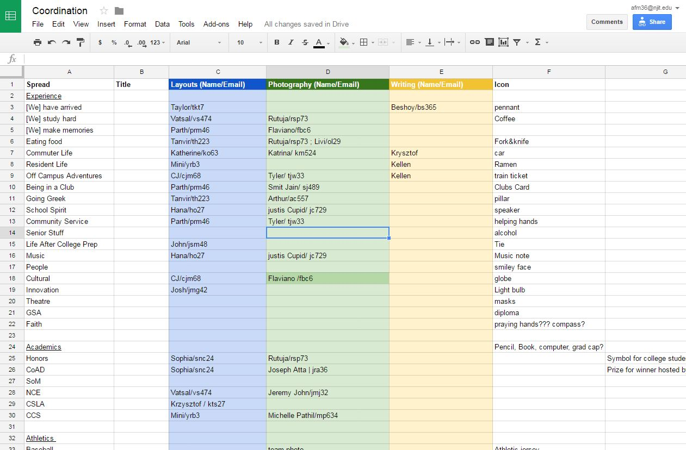

Nucleus Yearbook
Creating a new way to organize.
The Challenge
The yearbook club at NJIT is an organization that creates a annual book to both archive what NJIT is as well as provide a physical history of an alumni's time there. This is the primary action of Nucleus Yearbook and pools together yearlong efforts of all the staff memebers and editors. Efficiency is the best way to be sucessful as a yearbook club. Most moments only happen within seconds but for a student they can last years if captured at the right moment.
The issue with working on such an important colaborative project is that often things can get disorganized very quickly. Everyone has different schedules and finding a line between creativity and consitancy can be at times diffiult. Specifically for Nucleus Yearbook we were having an issue in getting our spreads done.
The Solution
What Nucleus Yearbook really needed was a way to get spreads done in the last few months up to printing. With a staff composed of members from all over NJIT it can be frustrating to work out times for meeting outside of the regular meeting time on Friday.
Seeing this issue I began work on a new organizational structure for making spreads. I called it Coordinator and it is a stupid simple solution. What Coordinator does is assign a specific spread for a team of three (One photographer, one writer, and one layouts person) to focus on a specific spread together. This created a better sense of within-spread consistancy in terms of combining design elements of writing and photography.
Sample coordination screen
Working with the layouts editor we also created a style guide to further improve between-spread consitency. The style guide was made light to allow layouts to be creative while still retaining the original theme.
Style guide for the spreads

Closing Thoughts
The changes made to the organization structure of getting spreads done constitantly was not ground breaking by any means but the method is still being used. If anything were to change with the implementation it would be to introduce the system sooner in the year rather than later. This would allow the team of three to get to know eachother and work around their schedules to make an amzing spread!